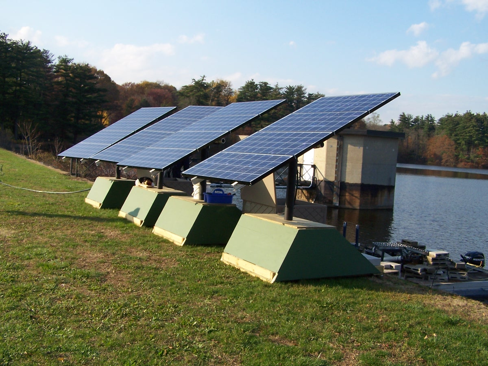

Off-Grid Technologies
There have been several Solar-Powered circulation systems available for lake and reservoir management over recent years. Unfortunately, those systems have not adequately accounted for the nature, the limnology, of the waterbody. Pumping nutrient-rich bottom water to the sunlit surface is not the best way to reduce algae blooms and improve water resource quality! Using wind and solar energy for managing water quality in reservoirs and lakes is an excellent concept, but only when it drives an appropriate process. It is more effective to manage how thermal stratification develops then to destroy the thermocline, pump nutrients to the surface, and stimulate algae blooms. Over the past three years Ecosystem Consulting Service has developed equipment that performs true Hypolimnetic Aeration and Layer Aeration, as well as Artificial Circulation, Expansion of the Epilimnetic Mixing Depth, and complete destratification using Wind and Solar Power (Patents Pending). You can use the oxygen produced by plants to aerate deeper water layers. You can "adjust where the thermocline forms" to reduce demands for dissolved oxygen. You can induce downward circulation patterns which eliminate the competitive advantage that the buoyant Bluegreen Algae (Cyanobacteria) have.  Solar Power can be collected by photovoltaic panels, stored by battery banks, and used to power compressors or impellers which drive any of the effective aeration and circulation methods for managing Lake or Reservoir water quality. Solar Power can be used to perform:
|
||
|

 Systems are also available that use Wind Power, or Hybrid Wind-Solar Power (Patent Pending).
Systems are also available that use Wind Power, or Hybrid Wind-Solar Power (Patent Pending).